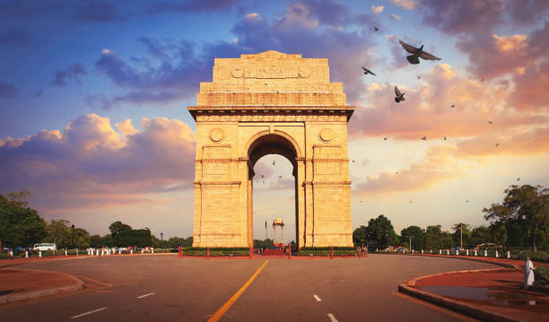
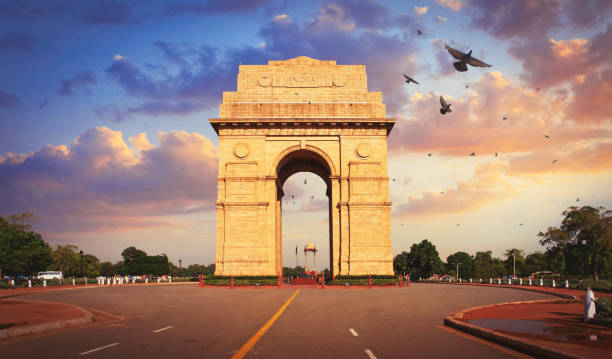
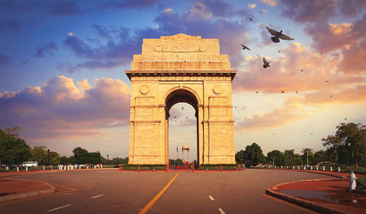

Image Gallery
 


A Monument of Honor and Legacy
The India Gate is a monumental structure located in the heart of New Delhi, India. It was designed by the British architect Sir Edwin Lutyens and was inaugurated in 1931. Originally called the "All India War Memorial," it commemorates the soldiers who died during World War I and later in other conflicts, including the Afghan Wars.
India Gate was built to honor the soldiers of the British Indian Army who sacrificed their lives during the First World War. Standing tall at 42 meters, it was initially constructed as a war memorial. Over the years, it has also come to represent the nation's honor and pride. It has a deep historical and symbolic significance, and remains a site of national importance.
The India Gate's design is a blend of Indian and Roman architectural styles. It is built from red sandstone and granite, and features a large arch that symbolizes the triumph of the Indian soldiers. At the top of the arch is an inscription that reads "Indien," representing the memorial's purpose. The surrounding area is beautifully landscaped, adding to its majestic appearance.
India Gate is located in the center of New Delhi, India, at the eastern end of Rajpath.
India Gate was designed in 1917, and construction began in 1921. The memorial was completed in 1931.
In 1971, the Amar Jawan Jyoti (The Flame of the Immortal Soldier) was added beneath the arch to honor the soldiers who died in the 1971 India-Pakistan war.
The India Gate stands at a height of 42 meters (138 feet) and is one of the tallest war memorials in India.
